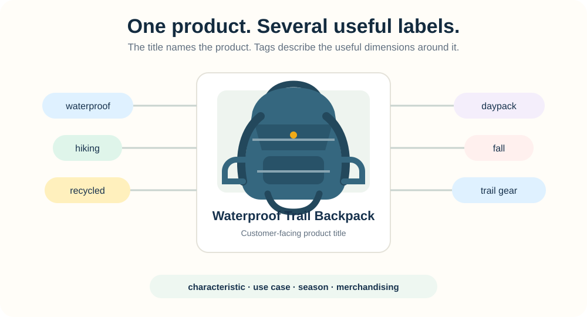
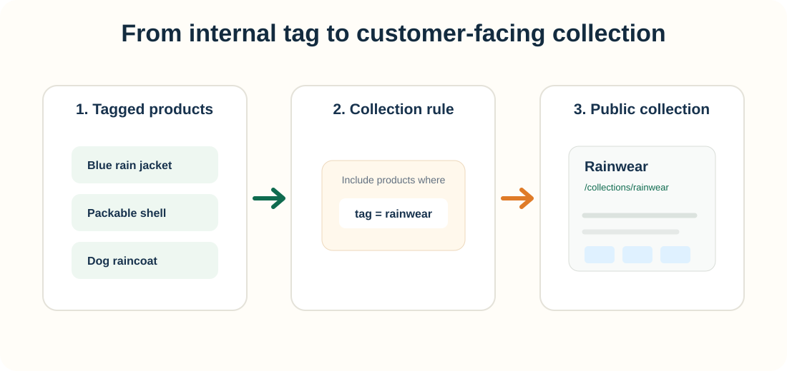
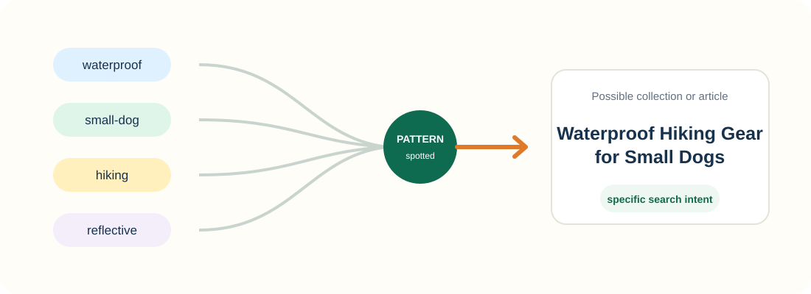
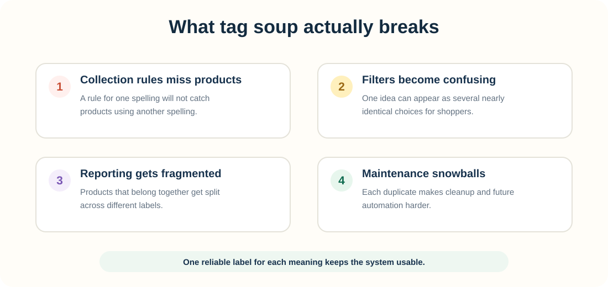

Product tags usually live behind the scenes, but they can shape a surprising amount of what happens in your store.
They help you label products by things like material, audience, season, use case, campaign, or merchandising group. That makes the catalog easier to manage. It can also make it easier to build useful customer-facing structure later.
1. What are product tags?
Product tags are descriptive labels attached to products in your store. A waterproof trail backpack might use tags such as waterproof, hiking, recycled, daypack, fall, and trail gear.
The title tells a shopper what the product is. Tags give you additional ways to classify that product without cramming every useful attribute into the title.

2. What are tags useful for inside Shopify?
This is where tags do their most obvious work. They give you a consistent vocabulary for products that share a characteristic or business purpose.
Tags can also help products stay grouped
Say several products share the tag rainwear. That tag can help drive a collection rule. Add another qualifying product later, and you can keep the grouping consistent without rebuilding the collection by hand.

3. How can tags support SEO?
A tag sitting only in Shopify admin is not a hidden keyword that tells Google to rank a product.
The useful handoff happens when your internal organization creates something public. Shoppers get clearer categories and navigation. Google can crawl those public pages and use the visible URL, title, copy, internal links, and products as context.
4. Why do collections and URLs matter?
Imagine your rainwear tag helps you build a collection of waterproof jackets. That collection now has something the internal tag never had: a public page.
/collections/84729 vs. /collections/rainwear
The descriptive URL helps a shopper recognize the page topic and gives Google another contextual clue while crawling the page. It is not a ranking trick, and the URL alone will not make the page rank.
The stronger signal is consistency across the page. If the URL says rainwear, the title says Rain Jackets & Waterproof Outerwear, the description explains the category, the links point to related products, and the products actually match, the page tells one coherent story.
5. How can tags reveal new search opportunities?
Tags can reveal patterns across your catalog that are easy to miss when you look at products one at a time.
For example, a cluster such as waterproof + small-dog + hiking may point to a more specific customer need than the broad category dog clothes.

6. What happens when your tags become a mess?
Tags stop being reliable when every variation becomes a new tag. dog gift, dog gifts, dog-lover-gift, and gift for dog lovers may all be trying to describe the same idea.
The problem is not that Google punishes you for messy tags. The problem is that your own systems stop agreeing with each other.

Pick one naming convention and reuse it. The goal is not to minimize the number of tags at all costs. The goal is one reliable label for each meaning.
Where Penstack fits in
Penstack treats tags as part of the larger product-content workflow instead of a separate field to fill out at the end. The title, description, tags, collections, product details, and search intent should make sense together.
The goal is not “generate more tags.” It is to use the product context to create cleaner, more useful organization while you are already preparing the listing.
The takeaway
Tags organize the catalog. The SEO value comes from the clearer collections, navigation, and public pages that organization helps you build.
Ready to create better product content?
Penstack helps you write, organize, and optimize product listings without turning product setup into another cleanup project.